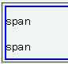
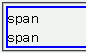

ブロック要素にline-heightプロパティを指定しているとき、匿名でないインライン要素だけで構成される行ではline-heightプロパティの指定どおりの行高が確保されない。
<div style="line-height:2; border:2px solid blue;"> <span>span</span><br> <span>span</span> </div>
div要素の子はすべてspan要素であり、匿名インライン要素が含まれていません。行の高さは文字の高さの2倍程度になるはずです。
Netscape7.1標準モード
Opera7.23標準モード